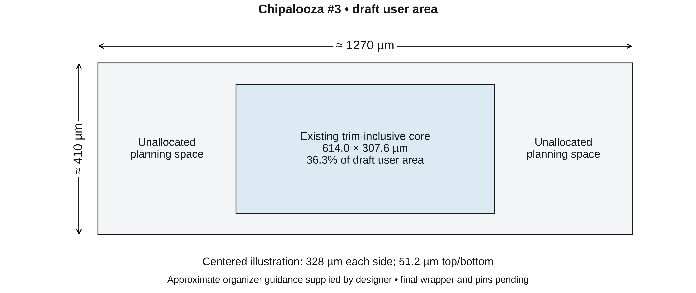

GF180MCU-D · simulated results, actual layout geometry and updated draft user area · 8 figures
Artwork uses a 7.1-inch master width, 7–9 pt labels, restrained colors and distinguishable line styles.
PDF and SVG exports preserve vector plots and text; PNG copies are 600 dpi. The GDS polygons are rasterized
inside vector files to keep them manageable. Full-size masters are intended for a wide paper figure;
do not shrink dense composites into a single narrow column without repaneling.
Presentation follows the readability principles in the
ISSCC figure guidance.
This is figure artwork, not an ISSCC submission or a claim of submission-template compliance.
All data, device geometry and verification results are preserved. RCC extraction remains approximate;
the core is not tapeout-qualified. Reproduction: scripts/render_paper_figures.py in the repository.
1. Fit within the updated draft user area

Approximately 1270 × 410 µm, from an organizer announcement supplied by the designer on 20 October 2026. Dimensions, occupied fraction and centered margins are calculated from the released GDS. These are geometric margins, not verified routing or boundary clearances. The centered position is illustrative; no GDS placement, slot, pin assignment or wrapper connection has changed. This draft target supersedes the earlier inferred smaller envelope for planning. Keep the analog core compact and use spare area selectively for matching, isolation, supply routing and harness access.
Simulated PSRR at TT, 25 °C, trim 72, DVDD = 3.3 V, ideal supplies/grounds, and no external load. The upper plots compare schematic, the previous layout, and the routing revision using the same ground-inclusive conserved-RCC approximation. The lower plots expand the minima; their vertical scales differ. Minima are sampled over 1 Hz–1 MHz. Annotated changes compare the two physical layouts with the same corrected extraction method. The full curves still differ from the schematic. Ground metal resistance is included; well/substrate resistance remains lumped and coupling placement is approximate.
Rendering of the actual routed and filled GDS, not a silicon micrograph. GF180MCU-D, five metals, MIM option B, 1 kΩ/□ poly. Sixteen numbered device-group labels and eleven capacitor labels locate the input pair, mirrors, cascodes, sinks, PNPs, bias and startup devices. Numbers 1–14 match the placement figure. The dashed outline identifies the trim-logic deep n-well region. Labels overlay the actual geometry. Layout polygons are rasterized at 600 dpi inside the vector exports; dimensions and labels remain vector. The matching revision reports zero DRC violations and an LVS match. Shuttle integration and full analog qualification remain open.
Historical planning allocations, retained as a box diagram. The earlier envelope inferred from the wrapper script was 537.15 × 273 µm. This concept is not the implemented placement or a fit guarantee. The implemented core exceeds this historical envelope, but fits geometrically within the updated approximately 1270 × 410 µm draft user area. Routing symmetry, shielding and dummy placement were planning intentions, not claims of completed verification.
Saved placement coordinates and device-group bounds, with actual GDS dimensions. Numbered groups identify matching sets; other device groups remain drawn. Blue: analog; amber: trim resistors; violet: digital trim circuitry; green: MIM capacitors. The dashed outline marks the trim-logic deep n-well region. Routing is omitted for clarity. The core mirrors, PNPs and PTAT resistor are clustered beside the trim network. Explicit tied-off MOS dummies surround every selected array.
Unit placement origins from the saved placement, with local coordinates and equal horizontal/vertical scale in each panel. Symbols identify source devices; black crosses show arithmetic centroids of their unit origins. Overlapping centroids share a cross. Q1 lies within the Q2 array; Q3 is separate. The drawing does not establish matched parasitics or statistical mismatch. Gray squares show tied-off dummy units. The M1/M2/M5 local drain routes have equal length, metal area and via count; global parasitics are not claimed equal.
Conserved-RCC approximation at TT, DVDD = 3.3 V. Temperature sweep uses trim 72; trim transfer includes all 128 codes at 25 °C. PSRR uses trim 72 at 25 °C; the lower-right plot shows analog supply current versus temperature. No added external output load. Signal/supply/ground metal resistance and parasitic capacitance are included; well/substrate resistance remains lumped. The project MIM compatibility model remains in use. Curves connect saved samples without smoothing.
All 360 saved DC samples: five MOS × three BJT × three resistor corners, two supplies, and four temperatures. Trim remains 72; there is no per-corner calibration. Columns separate MOS corners; rows separate AVDD. Each temperature contains nine BJT/resistor combinations. Open markers show samples and vertical strokes show their range; coincident samples overlap. Temperatures are plotted exactly, without horizontal jitter. All saved DC points completed; recovered solver fallback warnings are retained in the released log and summary. Convergence does not establish specification compliance.